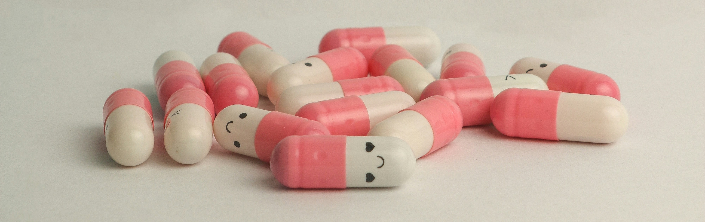
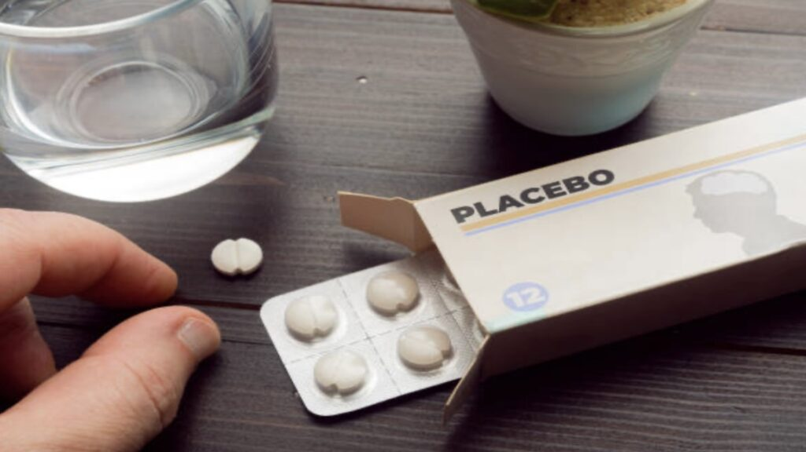

Descubre cómo la mente influye en la salud y el bienestar

¿Qué es el Efecto Placebo?
El efecto placebo es un fenómeno psicológico y fisiológico en el que una persona experimenta una mejora en su salud tras recibir un tratamiento sin principios activos. Este fenómeno demuestra la relación entre la mente y el cuerpo y es ampliamente estudiado en medicina, neurociencia y psicología (Benedetti, 2020).
Estudios recientes han demostrado que el efecto placebo no solo influye en la percepción del dolor, sino que también activa mecanismos neurobiológicos, como la liberación de endorfinas y dopamina en el cerebro (Wager & Atlas, 2015). Estos hallazgos sugieren que la sugestión puede desencadenar respuestas fisiológicas reales.
Estudios Científicos Recientes
Un metaanálisis de ensayos clínicos aleatorizados publicado en The New England Journal of Medicine (2020) mostró que los placebos pueden inducir mejoras significativas en pacientes con dolor crónico y enfermedades neurológicas, incluso cuando los pacientes saben que están recibiendo un placebo (Kaptchuk & Miller, 2020).
Otro estudio de Psychological Science (2019) analizó cómo el efecto placebo puede mejorar el rendimiento deportivo. Los atletas que creían estar consumiendo un suplemento energético mostraron aumentos en su resistencia y fuerza, demostrando el impacto de la sugestión en el desempeño físico (Benedetti, 2019).
Aplicaciones y Usos en la Medicina
Ensayos clínicos: Los placebos se usan en estudios para evaluar la efectividad de nuevos medicamentos y tratamientos.
Neurociencia: Investigaciones han revelado que los placebos pueden modular la actividad de circuitos cerebrales relacionados con el dolor y las emociones.
Psicoterapia: Se ha observado que los efectos placebo pueden ser útiles en tratamientos de ansiedad y depresión, aprovechando la autosugestión del paciente.

Consideraciones Éticas
El estudio del efecto placebo no solo es relevante desde un punto de vista científico, sino que también plantea importantes consideraciones éticas en la práctica médica y psicológica. A continuación, exploramos por qué es crucial comprender este fenómeno y cómo su aplicación debe manejarse con responsabilidad.
1. Uso de placebos en ensayos clínicos
En la investigación médica, los placebos se utilizan como grupo de control en ensayos clínicos para evaluar la efectividad de nuevos tratamientos. Sin embargo, su uso plantea dilemas éticos, especialmente cuando los pacientes podrían beneficiarse de un tratamiento real. Por ejemplo, en estudios sobre enfermedades graves como el cáncer o el VIH, administrar un placebo en lugar de un tratamiento efectivo podría poner en riesgo la salud de los pacientes (Kaptchuk & Miller, 2020).
2. Placebos en la práctica clínica
Algunos médicos han utilizado placebos en la práctica clínica para tratar síntomas como el dolor crónico o la ansiedad. Aunque esto puede ser efectivo en algunos casos, plantea preguntas sobre la transparencia y el consentimiento informado. ¿Es ético administrar un placebo sin informar al paciente? Según un artículo publicado en Scientific American (2021), el uso de placebos sin el conocimiento del paciente puede socavar la confianza entre el médico y el paciente.
3. El poder de la sugestión y la autonomía del paciente
El efecto placebo demuestra el poder de la sugestión y las expectativas en la salud. Sin embargo, esto también resalta la importancia de respetar la autonomía del paciente. Los profesionales de la salud deben ser transparentes sobre los tratamientos que administran y asegurarse de que los pacientes comprendan las opciones disponibles.
4. Implicaciones en la educación médica
Comprender el efecto placebo es fundamental en la formación de los profesionales de la salud. Los médicos y psicólogos deben estar conscientes de cómo las expectativas y la relación médico-paciente pueden influir en los resultados del tratamiento.
5. Relevancia en la investigación actual
El estudio del efecto placebo sigue siendo relevante en la investigación médica actual. Por ejemplo, durante la pandemia de COVID-19, los placebos se utilizaron en ensayos clínicos para evaluar la efectividad de vacunas y tratamientos.